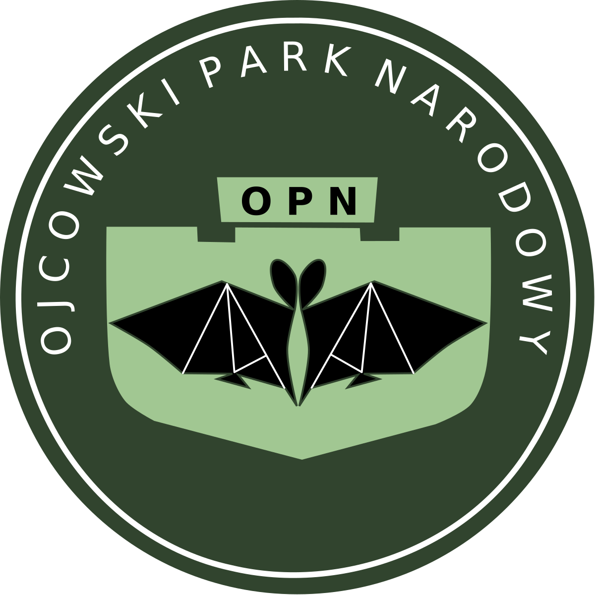

Ojscowski Park Narodowy
Park powstał w roku 1956 i jest najmniejszym parkiem narodowym w Polsce. Ochroną obejmuje obszar 21,46 km². Znajduje się w województwie małopolskim, 16 kilometrów na północ od Krakowa. W godle parku znajduje się nietoperz i nic w tym dziwnego, skoro zamieszkuje go 17 z 25 żyjących na terenie naszego kraju gatunków nietoperzy. Występują tutaj liczne jaskinie, w tym ta najsłynniejsza Jaskinia Łokietka. Natomiast w Jaskini Ciemnej odkryto najstarsze szczątki człowieka na terenie naszego kraju. Pięknie prezentują się wapienne skałki i ostańce, w tym choćby Maczuga Herkulesa, Brama Krakowska, czy Igła Deotymy. Na terenie Ojcowskiego Parku Narodowego znajdziecie również ruiny zamku kazimierzowskiego oraz Pałac w Pieskowej Skale.